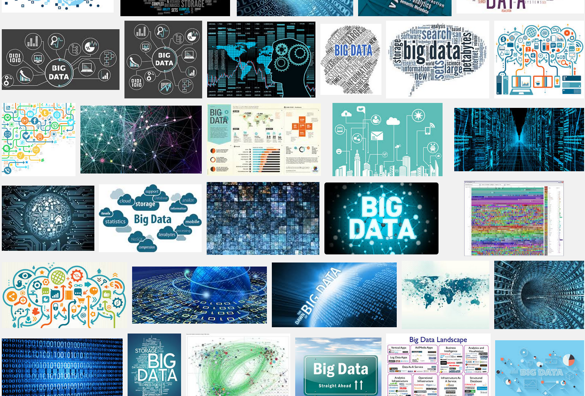
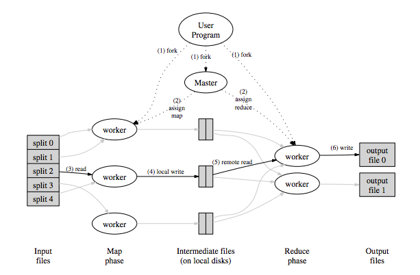
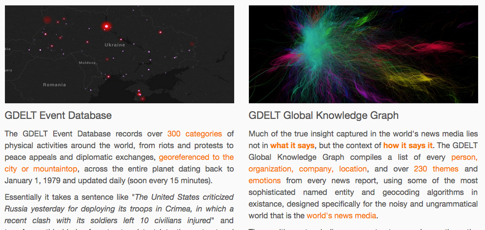
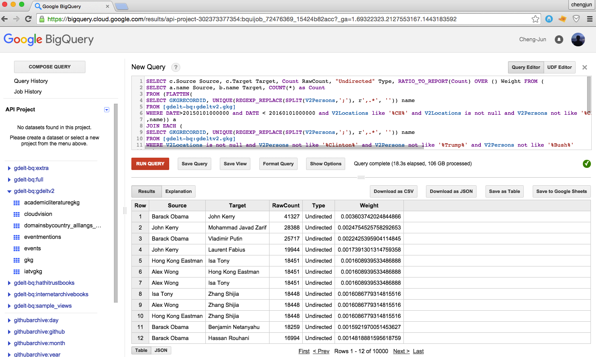
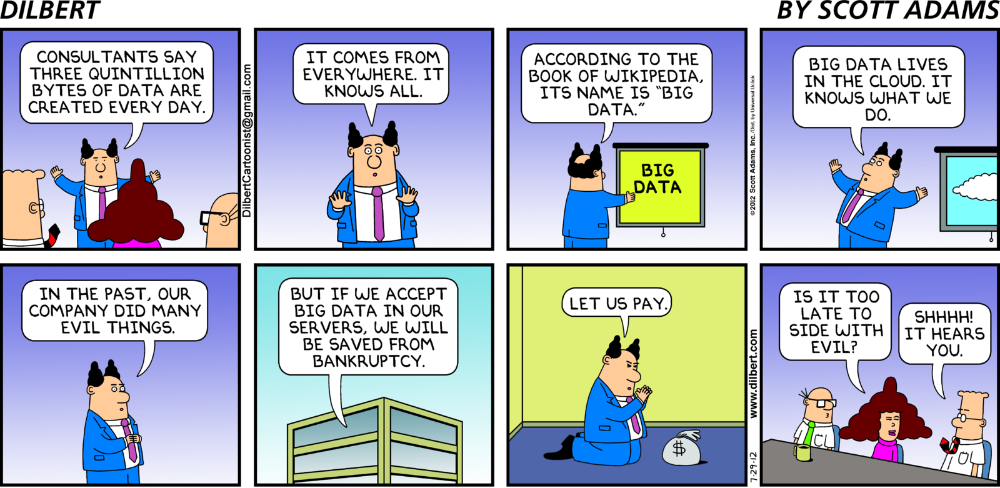
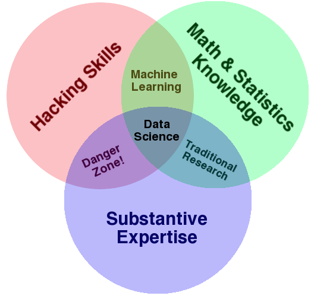

数据科学的编程工具：大数据¶
王成军
wangchengjun@nju.edu.cn
计算传播网 http://computational-communication.com
关于大数据的图片¶

数字¶
网络¶
文本¶
Big data is like teenage sex:
Everyone talks about it,
nobody really knows how to do it,
everyone thinks everyone else is doing it,
so everyone claims they are doing it.
Dan Ariely, Duke University
Big data is a broad term for data sets so large or complex that traditional data processing applications are inadequate. Challenges include analysis, capture, data curation , search, sharing , storage, transfer, visualization, and information privacy . (WIKIPEDIA)
云计算¶
2006: AWS EC2 (cloud-based computing clusters)
Tools in the Ecosystem: “Hadoop” and Map/Reduce
阿里云
百度云
Map/Reduce
Google article on MapReduce by Dean and Ghemawat, 2004

The nightmare that is to find out a way to split the data
word count
network?
An alternative to Hadoop, Spark with Python
把系统与算法结合，设计大规模分布式的机器学习算法与系统，使得机器学习算法可以在多处理器和多机器的集群环境下作业，处理更大量级的数据。 这方面较为知名的系统包括：
加州大学伯克利分校的Spark
谷歌的TensorFlow
华盛顿大学的Dato GraphLab
卡内基梅陇大学的Petuum
微软的DMTK系统
Giant Data Sets Are Around¶
amazon https://aws.amazon.com/public-data-sets/
雅虎开放数据 http://webscope.sandbox.yahoo.com/
Stanford Large Network Dataset Collection https://snap.stanford.edu/data/
bigdata/twitter7/tweets2009-07.txt.gz
Gdelt news data http://gdeltproject.org/

Big Query Demo of GDELT¶
https://bigquery.cloud.google.com/table/gdelt-bq:gdeltv2.events?_ga=1.69322323.2127553167.1443183592


Big Data and whole data are not the same. Without taking into account the sample of a data set, the size of the data set is meaningless. For example, a researcher may seek to understand the topical frequency of tweets, yet if Twitter removes all tweets that contain problematic words or content – such as references to pornography or spam – from the stream, the topical frequency would be inaccurate. Regardless of the number of tweets, it is not a representative sample as the data is skewed from the beginning.
d. boyd and K. Crawford, “Critical Questions for Big Data”
Information, Communication & Society Volume 15, Issue 5, 2012 http://www.tandfonline.com/doi/abs/10.1080/1369118X.2012.678878
… four quantitatively adept social scientists reported that Google’s flu-tracking service not only wildly overestimated the number of flu cases in the United States in the 2012-13 flu season — a well-known miss — but has also consistently overshot in the last few years. Google Flu Trends’ estimate for the 2011-12 flu season was more than 50 percent higher than the cases reported by the Centers for Disease Control and Prevention. …Their technical criticism of Google Flu Trends is that it is not using a broader array of data analysis tools. Indeed, their analysis shows that combining Google Flu Trends with C.D.C. data, and applying a few tweaking techniques, works best.
Google Flu Trends: The Limits of Big Data (NYT)
Lazer, David, Ryan Kennedy, Gary King, and Alessandro Vespignani. 2014. “The Parable of Google Flu: Traps in Big Data Analysis.” Science 343 (14 March): 1203-1205.
The first lesson of Web-scale learning is to use available large-scale data rather than hoping for annotated data that isn’t available. For instance, we find that useful semantic relationships can be automatically learned from the statistics of search queries and the corresponding results– or from the accumulated evidence of Web-based text patterns and formatted tables– in both cases without needing any manually annotated data.
Halevy, Norvig, Pereira

Type A: Analysis
making sense of data
very similar to a statistician
Type B: Builders
mainly interested in using data in production.
strong coders and may be trained software engineers.
Everyone should learn Python
Everyone should learn some SQL.
参考文献¶
维克托•迈尔•舍恩伯格（Viktor Mayer-Schönberger） 大数据时代：生活、工作与思维的大变革, 浙江人民出版社 Big Data:A Revolution That Will Transform How We Live, Work, and Think 译者: 周涛 2012-12 页数: 261
http://ghostweather.slides.com/lynncherny/what-is-big-data-anyway